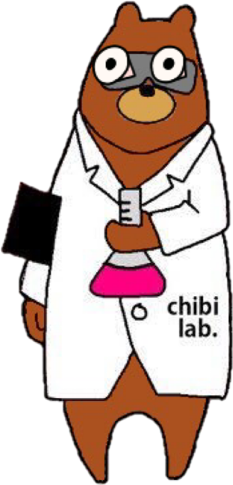

東京理科大学 サイエンスコミュニケーションサークルchibi lab.（ちびラボ）
むずかしそうを、おもしろそうに。
実験や工作、サイエンスショーを通じて、子どもたちに 「科学っておもしろい」を届ける学生サークルです。
01 / ABOUT
わたしたちについて
実験ノート
より抜粋
より抜粋
chibi lab. は、2012年10月に東京理科大学の学生10名で発足した サイエンスコミュニケーションサークルです。科学館や図書館、地域のお祭りなどに 出展し、実験ショーや工作教室を通じて子どもたちと科学のふれあいをつくっています。
そんなモットーのもと、大学で学んだ知識を分かりやすく・楽しく届ける方法を、 部員同士で日々研究しています。所属大学・学年を問わず、部員は随時募集中です。
- 科学館・図書館でのサイエンスショー出展
- 工作イベント・ワークショップの企画運営
- YouTube・SNSでの科学コンテンツ発信
02 / TOPICS
お知らせ
新しいお知らせはここに追加されます（更新は script.js の TOPICS リストで行います）
03 / EVENTS
活動記録
最新のイベントはここに追加されます（更新は script.js の EVENTS リストで行います）
04 / GALLERY
活動フォト
写真を追加する場合は images フォルダに入れて script.js でファイル名を指定してください
05 / CONTACT
お問い合わせ

実験教室・サイエンスショーのご依頼は、日時・場所・対象学年・人数などを明記のうえ
メールでご連絡ください（希望日の1〜2ヶ月前を目安にお願いします）。
取材やその他のお問い合わせは、下記フォームからどうぞ。